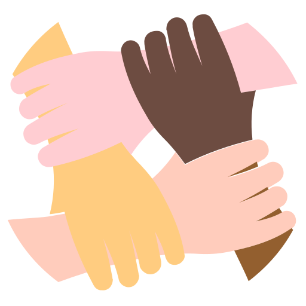

Mi experiencia y estudios.
Empleos anteriores.
- Ejército Argentino: (8 años),Me desempeñe como soldado desde (21 de oct del 2012 hasta el 1 de nov del 2019), desempeñe tareas correspodnientes a mi rol de combate como (radio operador del pelotón comando), y en tareas administrativas me desempeñe como auxiliar de jefe y encargado de la CoCdoYSer(compañia de comando y servicios), desempeñando tareas administrativas, (servicios del personal, control de personal, etc...).
- Mendoza Norte:Me desempeñe como portero en empresa de seguridad (01 de nov del 2019 hasta el 29 de dic del 2020).
- Westech:Me desempeñe como portero en empresa de seguridad (01 de ene del 2021 hasta el dia de la fecha).
Estudios.
- Secundario:CompletoBachiller en economía (Instituto academico BALZAC).
- Inglés:Basico
- Curso / Se programar / Plan Argentina Programa:1ra Etapa aprobada.
- Curso / Yo programo / Plan Argentina Programa:2da Etapa en curso.
De mi interes.

- En el estudio:Soy autodidacta, me interesa el ambito de la tecnología, inicie con mi interes en la programación en el año 2019, hasta poder inscribirme en el curso de argentina programa.
- Trabajo:Me interesa un ambito en el que el trabajo en equípo sea fundamental, soy una persona que le interesa aprender y aportar con y de los integrantes de un grupo. Me interesé en la programación no solo por su modo de trabajo, ya sea a distancia o presencial o por el echo de poder estar mas tiempo con mi familia y poder hacer actividades que me gusten, me intereso mucho la modalidad de trabajo en equipo y el poder especializarme en algo que sea dinamico, ya que soy una persona que le gusta aprender y trabajar en equipo.
- Con respecto a la programación:En el curso para ser full stack me encuentro muy interesado, pero me inclino mas a lo que es el back end, y tengo interes de seguir especializandome, asi tambien me gustaria poder especializarme en el desarrollo de aplicaciones web.